Unity 6000.6.5f1 captures for all eleven active characters. Left: actual body mesh with its source texture, shown without finish shading. Middle and right: the runtime unfound and rare silhouette graphics. Rarity hides the face and material, while preserving the collection’s body shape. Question-mark overlays remain supplied by the existing HUD.
The focused native geometry test passed for all 22 normal/rare paths. Phone build unchanged.
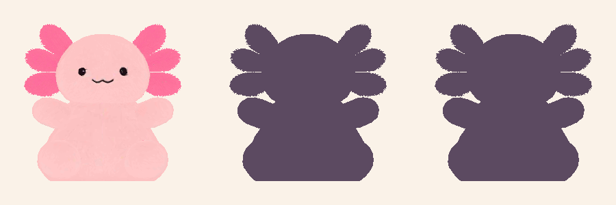
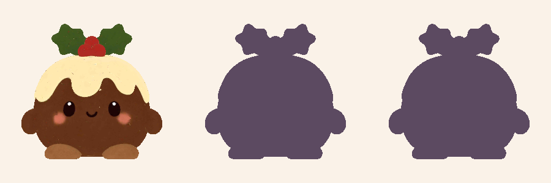
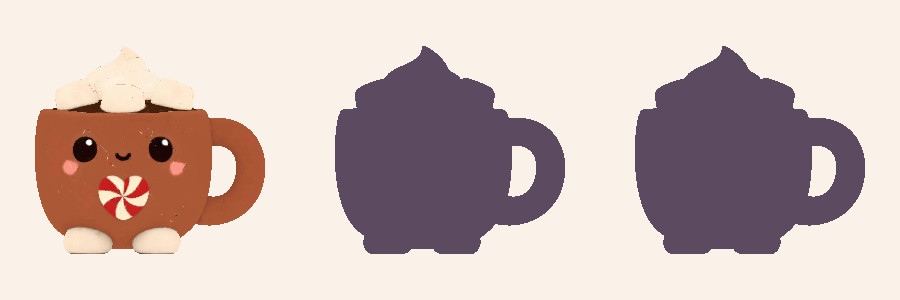
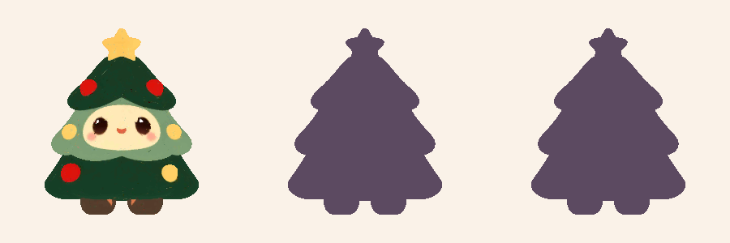
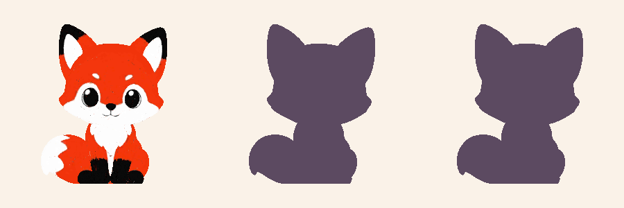
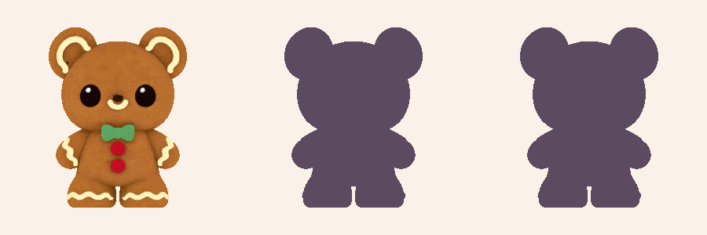
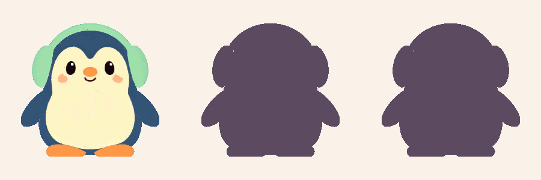
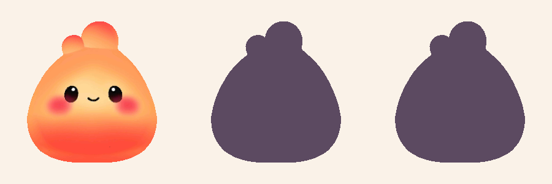
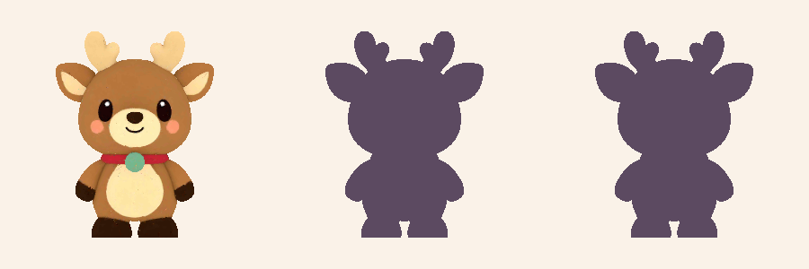
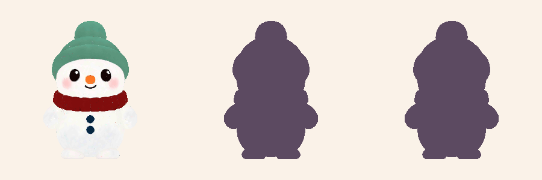
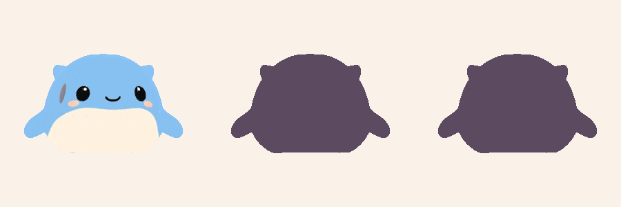